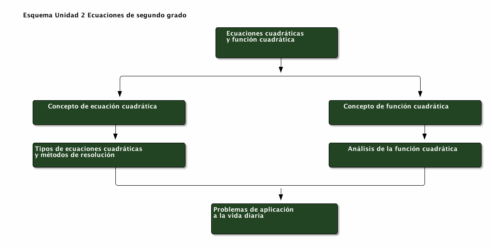
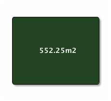

Recursos, estrategias, notas de clase y material complementario de la asignatura Matemática, dirigido a estudiantes de Tercer año Enseñanza Media en régimen Técnico Profesional (TP).
Entre las Metas de Aprendizaje de la actual unidad se encuentran:

3A: esta es la guía que deben descargar:
- Guia_Formativa_2_3TP_Ecuacion_Segundo_Grado.pdf. Este material provee una serie de 90 ejercicios para apoyar su aprendizaje en los métodos de resolución de ecuaciones de segundo grado propios de la Unidad 2 Ecuaciones de segundo grado.
Suponga que se desea cercar un terreno cuadrado cuya área conocida es de \(552.25m^2\), al respecto:

Si ya reflexionó en torno a estas ideas, lo invito a observar el siguiente video que lo puede orientar más aún.
Estas ecuaciones se caracterizan por la ausencia del término lineal, debido a que el coeficiente lineal, \(b=0\). En consecuencia, estas ecuaciones se resuelven mediante despeje de la incógnita, a modo de ejemplo, observe la siguiente ecuación:
\begin{eqnarray*} 4x^{2}-16&=&0\\ 4x^{2}&=&16\\ x^{2}&=&4\\ |x|&=&\sqrt{4}\\ x&=&\pm2\\ &\Rightarrow&x_1=2\wedge x_2=-2 \end{eqnarray*}Lo anterior, permite establecer que toda ecuación de segundo grado de la forma \(ax^2+c=0\), se puede resolver mediante un procedimiento similar al del ejemplo.
Para profundizar, puede observar el siguiente video:
En este tipo de ecuaciones cuadráticas, están presentes todos los coeficientes, i.e., \(a,b,c\), particularmente el caso en que \(a=1\), de modo que es posible observar tan sólo los coeficientes lineal e independiente.
La estrategia consiste en encontrar dos números que multiplicados den el valor de \(c\) y los mismos números sumados den el valor de \(b\).
| \(x\) | 0 | 1 | -1 | -2 | -3 | 2 | -5 |
|---|---|---|---|---|---|---|---|
| \(y\) |
Recuerde que un punto \((x,y)\) pertenece a la curva de una ecuación cuando \(x\) satisface la función dada.
Una los puntos (pares ordenados) obtenidos. ¿Se trata de una recta o una curva?
El discriminante \(\Delta=b^2-4ac=0\) establece que existen \(2\) soluciones, iguales y que pertenecen al conjunto de los números reales.
Las actividades anteriores las puede encontrar desarrolladas en un applet de Geogebra, disponible en el cuaderno siguiente:
Existe un repositorio en Onenote que incluye la mayoría de los contenidos de los videos, además de recursos y notas de clase hechas «in situ». Puede ver dicho contenido en el siguiente libro Onenote:
{kind=link}